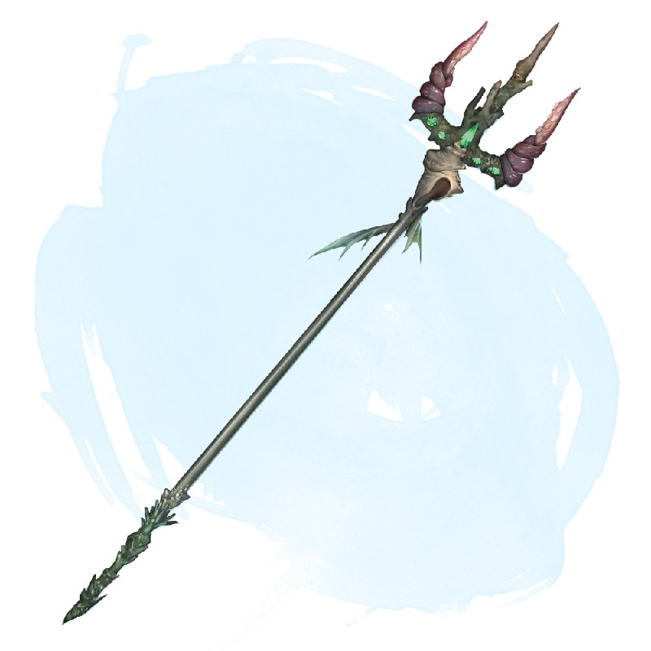

Trident de domination aquatique
Arme (trident), peu commun (nécessite un lien)
Ce trident est une arme magique. Il dispose de 3 charges. Si vous le tenez, vous pouvez utiliser une action et dépenser 1 charge pour lancer domination des bêtes (sauvegarde DD 15) depuis le trident sur une bête qui a une vitesse de nage innée. Le trident récupère 1d3 charges dépensées chaque jour à l'aube.
Dungeon Master´s Guide (SRD)
